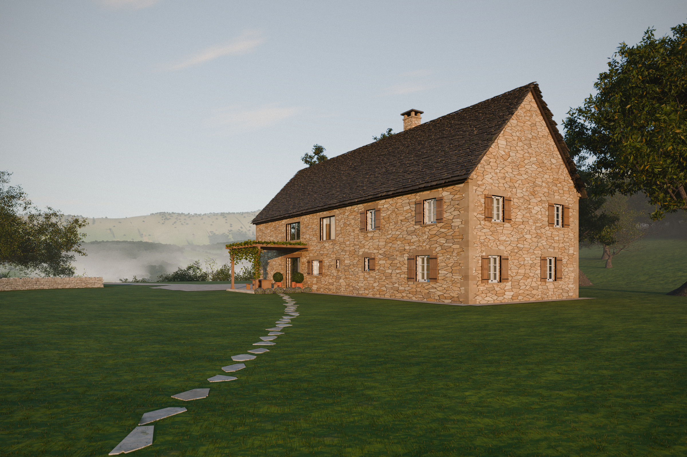
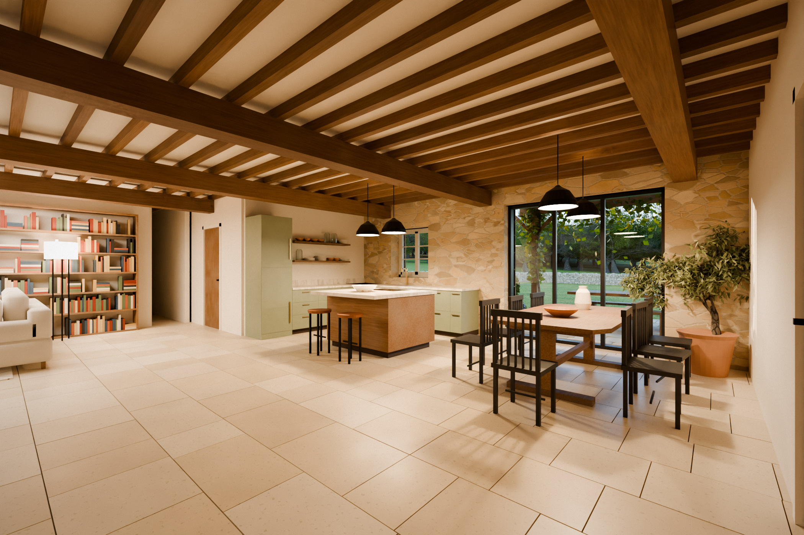
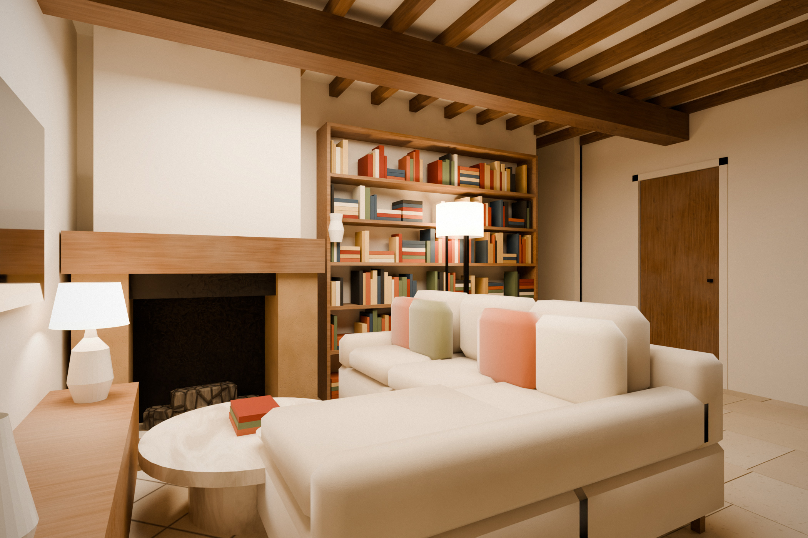
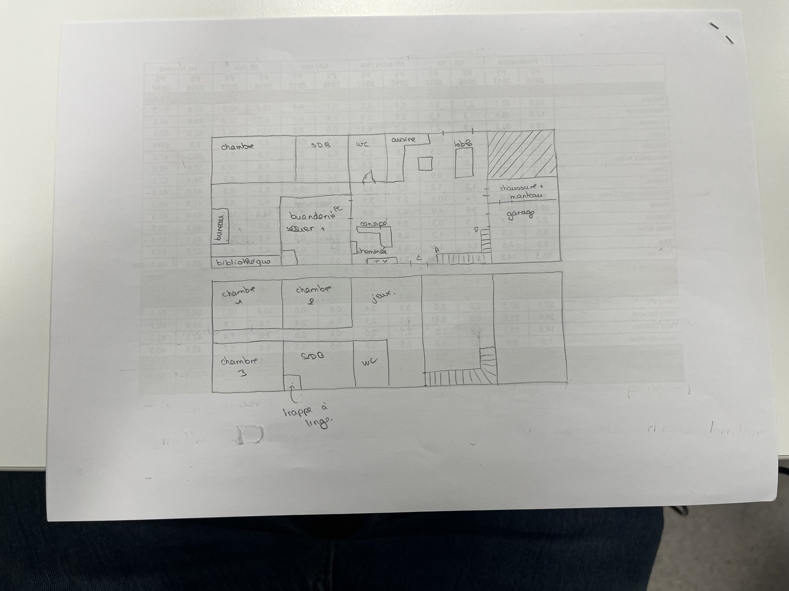

Une longère aveyronnaise rénovée, modélisée en 3D à partir du plan dessiné à la main. Côté jardin, une grande baie vitrée ouvre le séjour sur la terrasse et le paysage du Causse. Faites la visite à 360°, du jardin jusqu'à la cuisine.
Visite virtuelle
Faites glisser l'image pour regarder autour de vous. Les flèches vous déplacent d'un point à l'autre, les pastilles « i » indiquent ce que vous voyez. Le bouton en haut à droite de la vue passe en plein écran.
Chargement de la visite…
Rez-de-chaussée
Entre le bloc WC et le mur du garage, la pièce de vie suit le plan : cuisine en L et îlot, table devant la baie, salon avec cheminée, escalier quart tournant dans l'angle.


Plan d'origine
Le croquis a servi de référence pour l'emprise, les pièces et les ouvertures. Le côté haut du plan est le côté jardin.

| Pièce | Ouverture dans la maquette |
|---|---|
| Séjour, table | Grande baie vitrée coulissante (dessinée sur le plan), terrasse et pergola |
| Cuisine | Fenêtre au-dessus de l'évier, volets en chêne |
| Chambres | Une fenêtre à volets battants par chambre, côté jardin ou pignon |
| SdB, WC | Petites fenêtres, un volet pour les salles de bain |
| Jeux, palier | Grandes fenêtres modernes à l'étage, côté jardin |
| Entrée « E » | Porte en chêne côté entrée |
| Garage | Double porte en chêne sur le pignon est |
| Zone hachurée | Mur plein, sans ouverture |